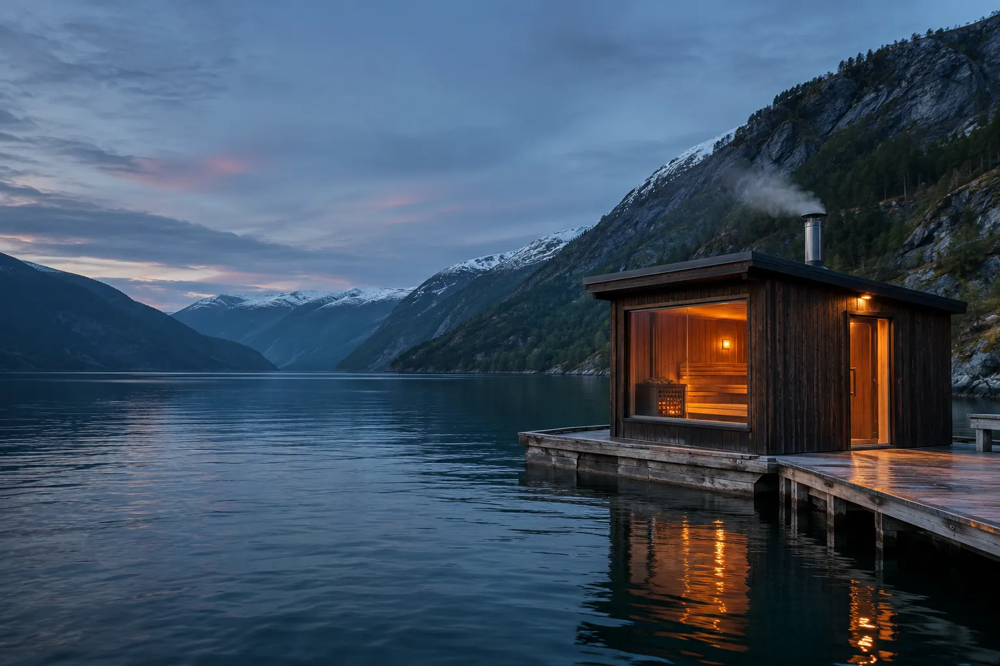
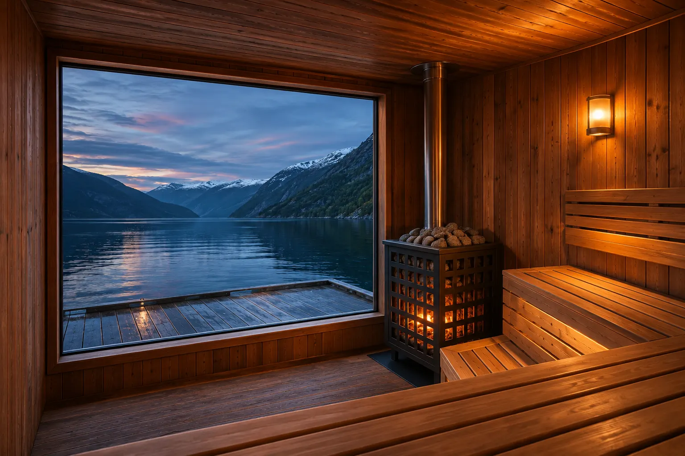

Flytende badstue i Eksempelby
Kaldt vann.Varm sjel.
Fra benken ved vedovnen ser du rett ut på fjorden. Ta en dukkert fra bryggen og kom tilbake til varmen. Kom på drop-in, eller ha hele badstua for dere selv.
Badstue ca. 80 °CPlass til 12Rett i fjorden
Økter og priser
Velg hvor lengedu vil bli.
Vi har håndkle og vann klart, og en krakk på bryggen når du vil kjøle deg ned. Ta med badetøy.
- 90 minutter
Drop-in
En plass på benken og tid til en dukkert. Kom alene eller sammen med en venn.
290 krper person
- Hverdager 07–09
Morgenbad
Få opp varmen og ta et bad før arbeidsdagen begynner.
190 krper person
- 2 timer · opptil 12
Hele badstua
Samle vennegjengen, laget eller bursdagsselskapet. Badstua er fyrt opp når dere kommer.
2 990 krfor alle
Alle priser er eksempelpriser for et fiktivt firma.
Ritualet
Varmt, kaldt,hvile. Gjenta.
Første gang? Følg disse tre stegene, to eller tre runder. Vi viser deg hvordan når du kommer.
- 1
Varm opp
Sett deg i badstua til du er god og varm. Gå ut før det blir ubehagelig.
10–15 minutter - 2
Kald dukkert
Gå rolig ned trappa og ut i fjorden. Pust ut, og kom opp igjen.
Noen sekunder - 3
Hvil
Sett deg på bryggen med et håndkle. Kjenn varmen komme tilbake.
10 minutter
Book plass
Finn en øktmed ledig plass.
Velg dag og tid. Grønn strek viser hvor mange plasser som er ledige.
Vi fyrer opp.
Dette er et fiktivt eksempel. Ingen plass er booket.

Om Kvelv
Bygd forfjorden.
Kvelv flyter ved bryggen i Eksempelby. Her knitrer det i vedovnen, og gjennom vinduet følger du lyset over fjorden.
Mari og Jon (fiktive personer) driver badstua. De er på bryggen hver dag og hjelper deg til rette, også når det er første gang.
- 12plasser
- Vedi ovnen
- Heleåret
Anmeldelser
Etter en runde.
Anmeldelsene er fiktive eksempler.
«Jeg trodde jeg aldri ville bade i november. Nå gleder jeg meg til det hver uke.»
Kari, Eksempelby
Fiktiv anmeldelse«Leide hele badstua til 40-årsdagen. Rolig, varmt og helt annerledes.»
Per, Eksempelby
Fiktiv anmeldelse«Morgenbad før jobb. Bedre enn kaffe.»
Nina, Eksempelby
Fiktiv anmeldelse
Praktisk
Ta medbadetøy.
- Badetøy
- Badesko
- Lue til vinteren
- Godt humør
- Mandag–fredag
- 07–21
- Lørdag–søndag
- 10–20
0000 Eksempelby
Parker ved havna. Garderobe og dusj i bryggehuset.
Spørsmål
Før første gang.
Må jeg bade i fjorden?
Nei. Mange nøyer seg med en kald dusj, eller bare å sitte på bryggen og kjøle seg ned.
Er det trygt å bade om vinteren?
Gå rolig uti, bli bare noen sekunder og hold deg ved trappa. Har du hjerteproblemer, snakk med legen din først.
Hvor varmt er det inne?
Vanligvis rundt 80 grader. Det er kjøligere på nederste benk.
Kan jeg komme alene?
Ja. På drop-in deler du badstua med andre, og vi hjelper deg i gang.
Hva om det blir storm?
Da stenger vi og sender deg SMS. Du får plassen flyttet eller pengene tilbake.